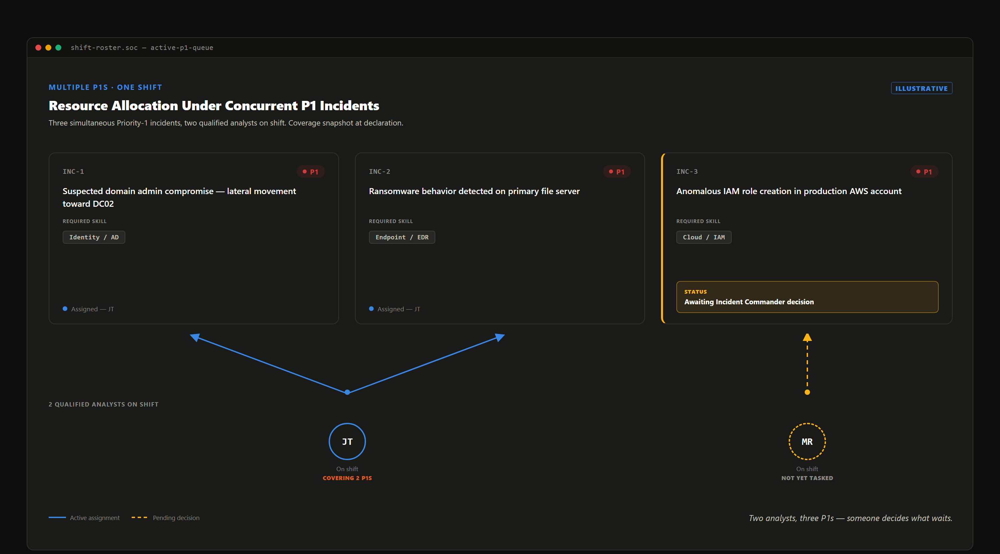
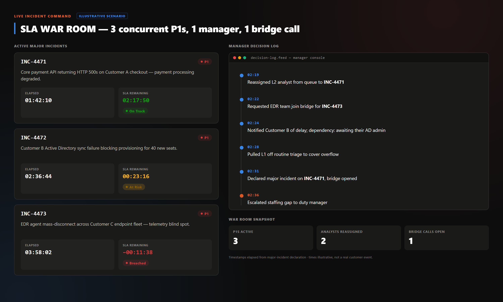

The SLA clock assumes one incident at a time. It has no term for three P1s landing in one shift against two qualified leads — whether the SOC practices incident command or reverts to first-come-first-served depends on writing that call down.
Within eleven minutes, three detections cross the P1 threshold: domain-controller lateral movement, file-server ransomware encryption, and an anomalous IAM role creation in production AWS. All three page P1; only two analysts on shift are qualified to lead one.

The trap: whoever is free grabs the loudest or first-paged ticket, and the other two wait by accident, not decision. An incident commander exists to interrupt that — triaging the triage before assigning anyone. That role has to come from somewhere other than the two scarce leads: the shift lead, a role distinct from the two analysts qualified to run a P1, carries it, since spending one of only two qualified leads on pure coordination is the shortage repeating itself one level up.
That assessment reorders everything here. The file-server host was already isolated by automated containment — one host, contained. The IAM change traces to a stale-credential automation account, fully reconstructable from logs. The domain-controller movement has no such ceiling — success compromises every credential trusting that domain, so it gets the primary analyst's full attention while the second triages ransomware in parallel and the IAM finding goes to cloud platform.
| Incident | Domain | Confirmed impact / blast radius | Disposition |
|---|---|---|---|
| Lateral movement, domain controller | Identity | Unbounded if successful | Primary analyst |
| Ransomware encryption, file server | Endpoint | Isolated by automation | Second analyst, parallel |
| Anomalous IAM role creation | Cloud IAM | Stale credential, logged | Cloud platform team |
Illustrative reconstruction of the incident commander's assessment, not a specific customer engagement.
Reassignment draws on more than the two free leads: lower-priority queue work pauses, its owner pulled into overflow for evidence collection. Each incident also gets the team that owns its domain — AD engineering, EDR, cloud platform.

The artifact that makes this defensible is a decision log kept live: what was reassigned, when, on whose authority, and which incident was left with less coverage and why.